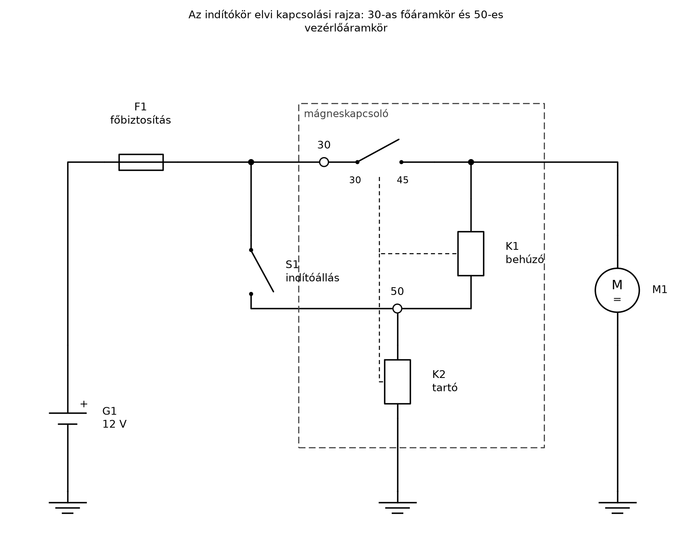
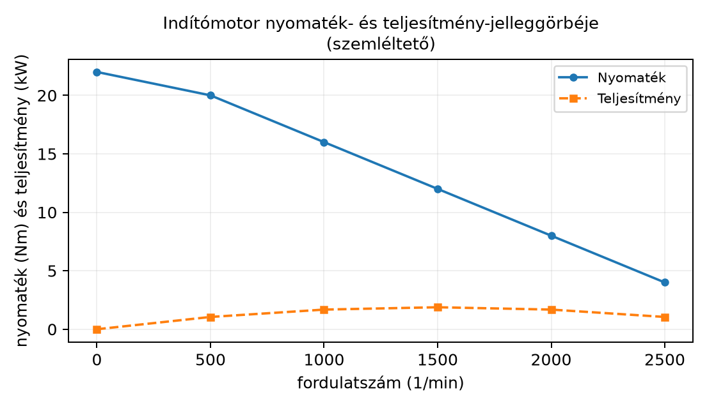

Téli reggelen az ügyfél telefonál: „csak kattan egyet az autó, de nem indul”. A műhelyben először sokaknak az akkumulátor jut eszébe, de a hibás indítómotor, a meglazult testkábel vagy a kopott mágneskapcsoló is pontosan ugyanezt a tünetet okozhatja. Ahhoz, hogy céltudatosan, alkatrészcsere-lottó nélkül keressük meg a hibát, ismernünk kell az indítókör áramútját, a mágneskapcsoló behúzó- és tartótekercsének szerepét, valamint az indítómotor nyomaték–fordulatszám jelleggörbéjét. Ebben az alfejezetben a műhelyi beméréshez szükséges villamos és mechanikai alapokat építjük fel.
Képzelj el egy soros benzinmotort a motortérben. Az indítómotor hengeres teste a váltóharanghoz van csavarozva, tengelyén egy kis fogaskerék (az indítófogaskerék) kapcsolódik a lendkerék fogkoszorújához. Az indítómotor hátulján két vastag rézkábel-kötést látsz: az egyik közvetlenül az akkumulátor pozitív sarujáról jön (30-as áramkör), a másik a mágneskapcsoló motor felé menő kimenete. Mellette egy vékonyabb vezeték (50-es áramkör) vezet a gyújtáskapcsoló indítóállásából a mágneskapcsoló vezérlőbemenetére. Indításkor először a vékony vezetéken folyó kisebb áram működteti a mágneskapcsolót, amely betolja a fogaskereket a fogkoszorúba, és csak ezután zárja be a vastag főáramkört. A motor nagy nyomatéka megforgatja a főtengelyt, amíg a motor saját erejéből be nem indul.
A belső égésű motor nem képes nulla fordulatszámról saját erőből elindulni, ezért külső nyomatékra van szüksége. Az indítás során le kell győzni:
Definíció. Az indítási fordulatszám az a
legkisebb főtengely-fordulatszám, amelyen a keverékképzés, a kompresszió
és a gyújtás már megbízhatóan létrehozza az első égést. Személyautóknál
ez Otto-motoron jellemzően 80–120 1/min, dízelmotornál 150–250 1/min
nagyságrendű (ellenőrizendő: gyártói adat, típusfüggő).
Indítási segédberendezés nélküli dízelmotor hidegben ennél jóval
magasabb fordulatot is igényelhet.
Összefüggés. Az indítómotor villamos teljesítményfelvétele az egyszerű egyenáramú teljesítményképlettel számolható:
ahol az indítómotor kapcsain mérhető feszültség, az indítóáram. A gyakorlatban a névleges 12 V-ból az indításkori nagy áram miatt csak 9–11 V jut az indítómotorra, így a leadott mechanikai teljesítmény kisebb, mint amit a 12 V-tal számolnánk.
Számítás. Adott: indítómotor kapocsfeszültsége , indítóáram . Keresett: a felvett villamos teljesítmény. Képlet: . Behelyettesítés: . Eredmény: a motor 1,8 kW villamos teljesítményt vesz fel. Ellenőrzés: a tipikus személyautó-indítómotor 1,0–2,5 kW névleges teljesítményű, így az eredmény reális nagyságrendű. ∎
Felépítés és működés. A hagyományos indítómotor soros gerjesztésű egyenáramú motor, amelynek armatúratekercse és gerjesztőtekercse sorba van kapcsolva. Ennek előnye, hogy a nyomaték nemlineárisan nő az árammal: kis fordulatszámon nagy áram folyik, a gerjesztőfluxus is nagy, ezért igen nagy indítónyomaték keletkezik. Ahogy a motor felpörög, az indukált ellenfeszültség nő, az áram és a nyomaték csökken. A soros gerjesztésű motort tilos terhelés nélkül járatni, mert a terhelés csökkenésével az áram és a fluxus csökken, a motor pedig veszélyesen felgyorsulhat, sőt szétszakadhat a forgórésze.
Mágneskapcsoló. Az indítómotor nagy áramát nem kapcsoljuk közvetlenül a gyújtáskapcsolóval, mert az semmilyen praktikus utastéri kapcsolót nem bírna el. Ehelyett az 50-es kapcson keresztül egy mágneskapcsolót (behúzó relét) vezérlünk, amely két tekercset tartalmaz:
Amikor a horgony a véghelyzetbe ér, a mágneskapcsoló főérintkezője zárja a 30-as kapocs és a motor közötti áramkört. Ekkor a behúzótekercs két oldala közel azonos feszültségre kerül, ezért gyakorlatilag kikapcsolódik, és csak a tartótekercs dolgozik. A behúzótekercs soros bekötése tehát két célt szolgál: korlátozza a kezdeti áramot, és biztosítja, hogy a fogaskerék akkor kapjon nyomatékot, amikor már kellően mélyen benne van a fogkoszorúban.

Az áramút követése: indításkor az 50-es kapocsra kerülő feszültség a behúzótekercsen keresztül az indítómotor armatúráján át a testre záródik, a tartótekercs pedig közvetlenül a testre. A behúzótekercs és a motor soros ellenállása korlátozza ezt a vezérlőáramot. Amikor a főérintkező zár, a 30-as kapocsról a teljes indítóáram a motorra folyik, és a behúzótekercs kikapcsolódik.
A metszet (a) része a nyugalmi állapotot mutatja (fogaskerék kint, főérintkező nyitva), a (b) része a bekapcsoltat (a fogaskerék a fogkoszorúban, az érintkezőhíd zárja a 30-as és a 45-ös kapcsot). Az interaktív változat lépésenként végigvezet a folyamaton, és a „csak kattan” esetet is megmutatja.
Szabadonfutó. Az indítófogaskereket szabadonfutó védi. Miután a motor beindul, a lendkerék hirtelen felgyorsul, és a fogaskerék fordulatszáma sokkal nagyobb lenne, mint az indítómotoré. A szabadonfutó csak egy irányban visz át nyomatékot: indításkor az indítómotor hajtja a lendkereket; túlfutáskor a fogaskerék szabadon forog, így a lendkerék nem hajtja vissza az armatúrát. Enélkül a forgórész szétszakadna a nagy centrifugális erőtől.
Csúszófogaskerekes (Bendix) indítómotor. A klasszikus, régebbi konstrukcióban az indítófogaskerék a motor tengelyén lévő meredek csavarmenetre van szerelve. Amikor az indítómotor forgásnak indul, a fogaskerék a tehetetlensége miatt a meneten kifelé csúszik, és bekapcsolódik a fogkoszorúba. Ha a motor beindul, a gyorsabban forgó lendkerék a csavarmeneten visszahajtja a fogaskereket alaphelyzetbe (ennél az egyszerű kivitelnél nincs külön szabadonfutó). Előnye az egyszerű felépítés, hátránya, hogy a kapcsolódás rángatós, és a fogaskerék fogai nagyobb terhelést kapnak.
Tolófogaskerekes indítómotor. A modern személyautó-indítómotorok leggyakoribb típusa. A mágneskapcsoló először a villán keresztül betolja a fogaskereket a fogkoszorúba, és csak a teljes kapcsolódás után zárja a főáramkört. A fogak így kíméletesebben kapcsolódnak, a szerkezet halkabb, és a fogkopás is kisebb.
Csúszóarmatúrás indítómotor. Ritkább, főleg régebbi nehéz járműveken alkalmazott megoldás, ahol a teljes armatúra tengelyirányban elmozdul, hogy a fogaskerék bekapcsolódjon. A szerkezeti felépítés egyszerűbb, de a nagy elmozduló tömeg miatt lassabb a kapcsolódás.
Belső áttételes (bolygóműves) indítómotor. Az indítómotor tengelye és a kihajtó fogaskerék közé bolygóműves áttétel, ritkábban homlokkerék-áttétel kerül. Az armatúra így kisebb méretű és kisebb tömegű lehet, miközben a kihajtó tengelyen nagy nyomaték keletkezik. A kompakt, könnyű felépítés miatt a modern, start-stop rendszerű járművekben is elterjedt.
Az indítómotor nyomatéka és fordulatszáma közötti kapcsolatot a soros gerjesztésű motor jelleggörbéje mutatja. Álló forgórésznél (n = 0) az áram a legnagyobb, mert nincs indukált ellenfeszültség. A nyomaték itt maximális, ezért az indítómotor éppen a legnehezebb, álló állapotban adja a legnagyobb „megszakító” nyomatékot. Ahogy a motor felpörög, az áram és a nyomaték csökken. A teljesítménygörbe a nyomatékgörbéből számolható: (például 1500 1/min-nél ).

A nagy indítóáram következményeit a gyakorlatban feszültségesésként
mérjük. Egy 4 hengeres benzinmotor hidegindításakor 150–400 A, nagy
dízelmotornál 600–1000 A is folyhat
(ellenőrizendő: járműspecifikus gyártói adat). Ha az
indítókábel vagy a testcsatlakozás csak néhány milliohm, de a nagy áram
miatt a feszültségesés mégis jelentős.
Számítás. Adott: indítókábel ellenállása
,
indítóáram
.
Keresett: a kábelen eső feszültség. Képlet:
.
Behelyettesítés:
.
Eredmény: a kábel önmagában 0,8 V-ot ejt, így az indítómotor
kapcsaira csak körülbelül 11 V jut a 12 V-ból. Ellenőrzés: a
gyakorlati irányérték a teljes indítókörön legfeljebb 0,5–1 V
feszültségesés (ellenőrizendő: gyártói javítási adat).
∎
A start-stop rendszerű járművekben az indítómotort nagyon sok indítási ciklusra tervezik, ezért megerősített csapágyazást, keféket és szabadonfutót kap. A cél a gyors, alacsony zajú és kis energiafogyasztású újraindítás. Egyes modern hajtásokban az indítómotor és a generátor szerepét indítógenerátor (ISG) veszi át, amely a lendkerék helyére vagy a főtengelyre szerelt villamos gép. Ez indításkor motorként hajt, menet közben generátorként tölt, és lehetővé teszi a belső égésű motor finom, ciklusos leállítását és újraindítását.
Az indítórendszer ellenőrzésekor a következő méréseket végezzük el, mindig a gyártói javítási adatokkal összehasonlítva:
(ellenőrizendő: akkumulátorgyártói adat).(ellenőrizendő: gyártói adat).(ellenőrizendő: gyártói adat).Egy 1,6 literes, start-stop nélküli benzines autó tulajdonosa azt panaszolja, hogy a motor nem indul, csak egyetlen kattanás hallatszik. A műhelyben az akkumulátor üresjárati feszültsége 12,5 V, ami megfelelő. A gyújtáskapcsoló indítóállásában az 50-es kapcson 12 V mérhető. A 30-as kapocson szintén 12 V van. Indítás közben a motor nem forog; a feszültségesés-mérés a pozitív oldalon 0,3 V-ot, a testoldalon (motorblokk és akkumulátor negatív sarka között) 4,8 V-ot mutat, és a testkábel saruja melegszik. A hiba a testkábel nagy átmeneti ellenállása (korrózió, laza saru), nem maga az indítómotor. A javítás a kötések tisztítása és a korrodált testkábel cseréje után az indítókör teljes feszültségesés-mérésével ellenőrizhető.
Biztonsági korlát. A feladat tanműhelyi környezetre, oktató felügyeletére és a gyártói javítási utasítás betartására vonatkozik; a megadott értékek tanulási példák. Javítás előtt győződjünk meg arról, hogy a váltó üresben van, a rögzítőfék be van húzva, és a kerekek kerékékkel biztosítottak (automata váltónál P állásban). A motor beindulását a gyártói eljárás szerint tiltsuk le (például befecskendezés- vagy üzemanyag-szivattyú-biztosíték, diagnosztikai funkció), mert a mérés közben forgó szíjhajtás van a mérőzsinórok közelében. Egy indítási próba legfeljebb 5–10 s legyen, utána legalább 30–60 s szünet (ellenőrizendő: gyártói adat). A forgó alkatrészektől, a laza ruházattól és a nagy áramú kötésektől tartsunk megfelelő távolságot.
Cél: az indítókör nagy ellenállású hibáinak kimutatása feszültségesés-méréssel.
A négy képkocka az 5–8. lépés mérési elrendezését mutatja: az 50-es kapocs és a test, az akkumulátor pozitív pólusa (a pólus ólmán) és a 30-as csavar, a motorblokk és a negatív pólus között mért feszültséget, valamint a 30-as kábelre tett lakatfogót, nyíllal az áram irányára. A megengedett értékeket a gyártói adat adja.
A mérés közben fellépő tipikus hibák: rossz mérőcsatlakozás, az indítás túl hosszú ideig tartó működtetése, a mérés közben a főáramkörű csatlakozó érintése. A mérések után a gyújtást kapcsoljuk ki, és húzzuk le a műszer csatlakozóit.
1. feladat (A) Sorold fel a mágneskapcsoló két tekercsét, és írd le, melyik milyen szerepet tölt be az indítási ciklus alatt.
2. feladat (A) Egy indítómotor 9 V kapocsfeszültségen 220 A áramot vesz fel. Számítsd ki a felvett villamos teljesítményt.
3. feladat (B) Egy indítókör vezetékeinek és kötéseinek ellenállása 0,004 Ω, a megfogott (álló) indítómotoré 0,021 Ω, az akkumulátor feszültsége 12,6 V (a belső ellenállást elhanyagoljuk). Mekkora a körben folyó áram, és mekkora az indítómotor kapocsfeszültsége?
4. feladat (B) Rajzold le az indítókör áramútját: akkumulátor → 30-as kapocs → mágneskapcsoló → indítómotor → test; valamint akkumulátor → gyújtáskapcsoló → 50-es kapocs → behúzó- és tartótekercs → test. Használd a kapocsjelöléseket.
5. feladat (C) Egy start-stop rendszerű autó indítómotorja indítás közben 600 A csúcsáramot vesz fel, az akkumulátor kapocsfeszültsége indítás közben 11,0 V. A pozitív kábel ellenállása 0,0012 Ω, a testoldali 0,0008 Ω. Számítsd ki a teljes feszültségesést a kábelezésben, és magyarázd el, miért romlik a motor indítási teljesítménye.
6. feladat (D) Egy autó indításkor lassan forgatja a motort, de az akkumulátor nyugalmi feszültsége 12,4 V. Indítás közben az akkumulátor kapcsain 10,9 V-ot, az indítómotor 30-as kapcsán (a testhez képest) 9,6 V-ot mérünk, a testoldalon pedig 0,5 V feszültségesést. Mi a legvalószínűbb hiba? Indokold a mérési értékek alapján.
Önellenőrzés – válaszok
Feladatok – megoldások
1. feladat (A) A mágneskapcsolóban behúzótekercs és tartótekercs van. A behúzótekercs indításkor a motoron keresztül záródik a testre, ez hozza létre a fogaskereket benyomó erőt, és korlátozza a kezdeti áramot. A tartótekercs közvetlenül a testre záródik, és a behúzás után is fenntartja a mágneskapcsoló behúzott állapotát. A főérintkező zárása után a behúzótekercs gyakorlatilag kikapcsol.
2. feladat (A) Adott: , . Keresett: . Képlet: . Behelyettesítés: . Eredmény: . Ellenőrzés: reális érték egy személyautó-indítómotorra. ∎
3. feladat (B) Adott: , . Keresett: és az indítómotor kapocsfeszültsége. Képlet: . Behelyettesítés: . A motoron: ; a vezetéken és kötéseken esik (összesen 12,6 V). Eredmény: az áram 504 A, a motor kapocsfeszültsége kb. 10,6 V. Megjegyzés: a 2,0 V vezetékoldali esés jóval a gyakorlati irányérték (0,5–1 V) fölött van, ezért ez a kör már hibás kötésre utalna. ∎
4. feladat (B) A kapcsolási rajz megegyezik az alfejezetben bemutatott indítókörrel: a 30-as kapocs az akkumulátorról a mágneskapcsoló főérintkezőjére, onnan a motorra, majd a testre vezet. Az 50-es kapocs a gyújtáskapcsolóról a behúzó- és tartótekercsre kerül. A behúzótekercs a motoron át záródik a testre, a tartótekercs közvetlenül a testre.
5. feladat (C) A pozitív oldali feszültségesés: . A testoldali: . A teljes esés: . Az indítómotorra így csak 11,0 − 1,2 = 9,8 V jut, ami a leadott teljesítményt és a fordulatszámot egyaránt csökkenti, ezért a motor indítása bizonytalanabb.
6. feladat (D) A pozitív oldali feszültségesés: , a testoldali 0,5 V; mindkettő meghaladja a gyakorlati irányértéket (0,5 V, illetve 0,3 V; ellenőrizendő: gyártói adat). Az akkumulátor kapocsfeszültsége indítás közben a belső ellenállás miatt eleve 10–11 V-ra esik, ezért nem a 12,4 V nyugalmi értékhez, hanem terhelés alatt, közvetlenül a két pont között mért esést kell nézni. A legvalószínűbb hiba a pozitív főkábel vagy kötései, valamint a testkábel nagy átmeneti ellenállása (korrózió, laza saru), nem maga az indítómotor.
Az indítómotor soros gerjesztésű egyenáramú motor, amelyet azért használnak, mert indításkor nagy nyomatékot ad, és jelleggörbéje a hideg motorhoz illeszkedik. A mágneskapcsoló behúzótekercse a motoron keresztül záródik, a tartótekercs közvetlenül a testre, így a főérintkező csak a fogaskerék bekapcsolódása után zár. A 30-as kapocs a főáramkört, az 50-es kapocs a vezérlőáramkört jelöli. A nagy indítóáram miatt a kábelezés és a kötések feszültségesését terhelés alatt kell mérni. A csúszófogaskerekes, tolófogaskerekes, csúszóarmatúrás és belső áttételes kivitelek eltérő kapcsolódási mechanikát képviselnek. Továbbvitt eredmény: a fenti kapocsjelöléseket, feszültségesés-mérési eljárást és az indítókör áramútját a Dízelmotorok indítási segédberendezései, a(z) Az áramellátó és indítórendszer diagnosztikája és a Gépkezelő általános ismeretei alfejezetekben használjuk fel.